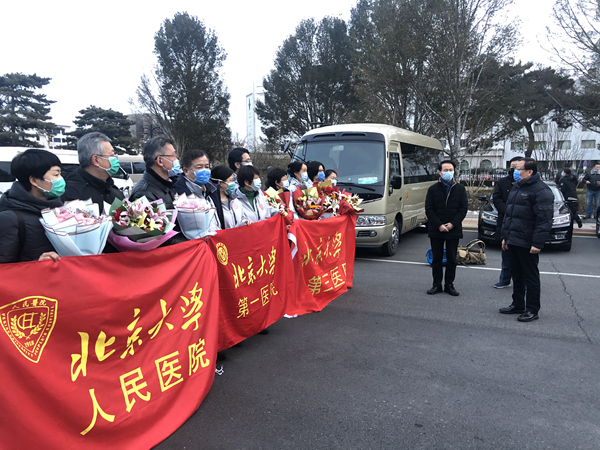
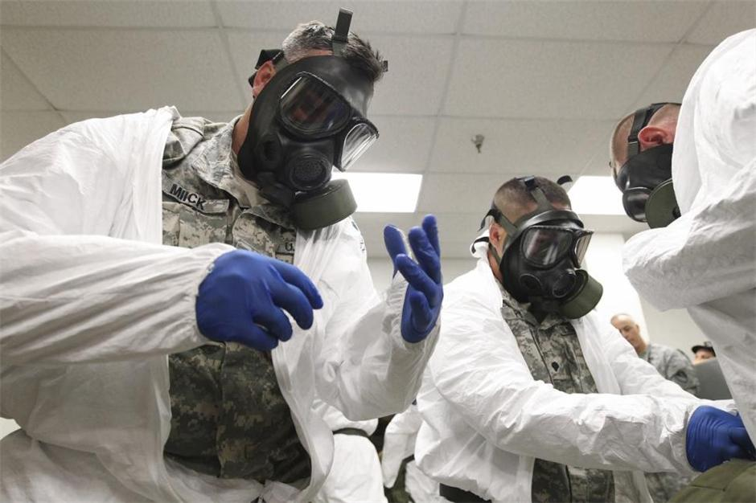
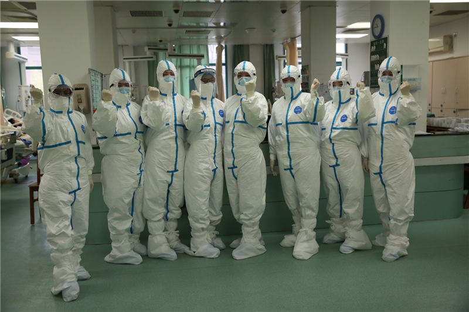
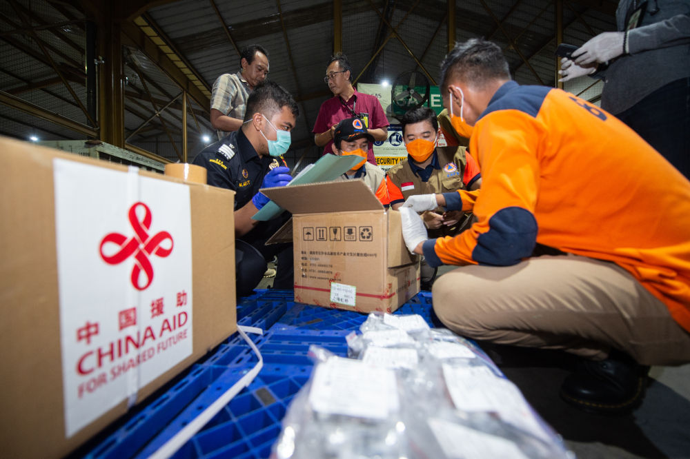
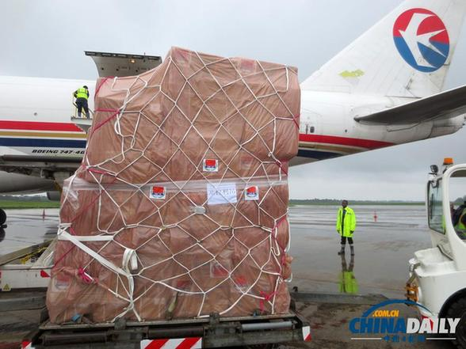
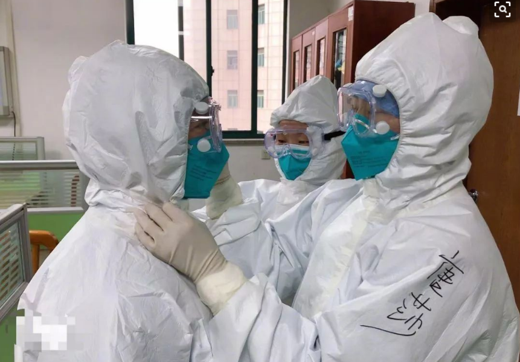
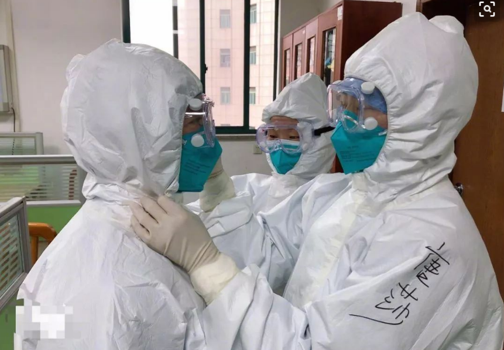
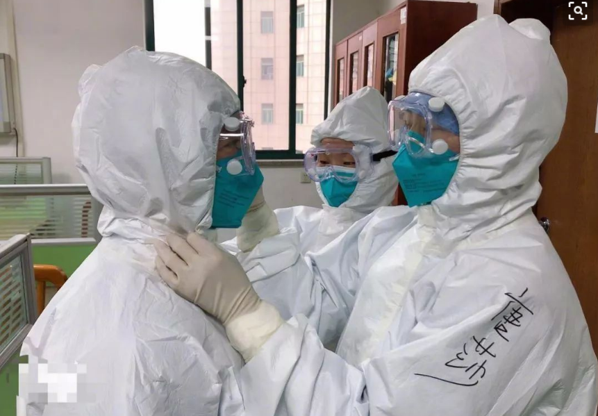

[点击查看数据]





 


中国防疫形势持续向好 全面收官尚待时日
根据官方数据，3月17日，湖北新增疑似病例0例，现有疑似病例0例，实现疑似病例的“清零”！
18日上午，这一消息迅速登上热搜。作为中国疫情防控的决战决胜之地，武汉以及湖北全省日渐向好的防疫态势，让人进一步看到中国战疫全面胜利......
[点击阅读全文]科技部：中国与全球140个国家地区交流防疫经验 药物研发成果被部分国家采纳
【环球网报道】4月14日15时，国务院联防联控机制召开新闻发布会，介绍新冠肺炎药物研发、疫苗研制等科研攻关进展情况。
会上，科技部生物中心副主任孙燕荣......
[点击阅读全文]